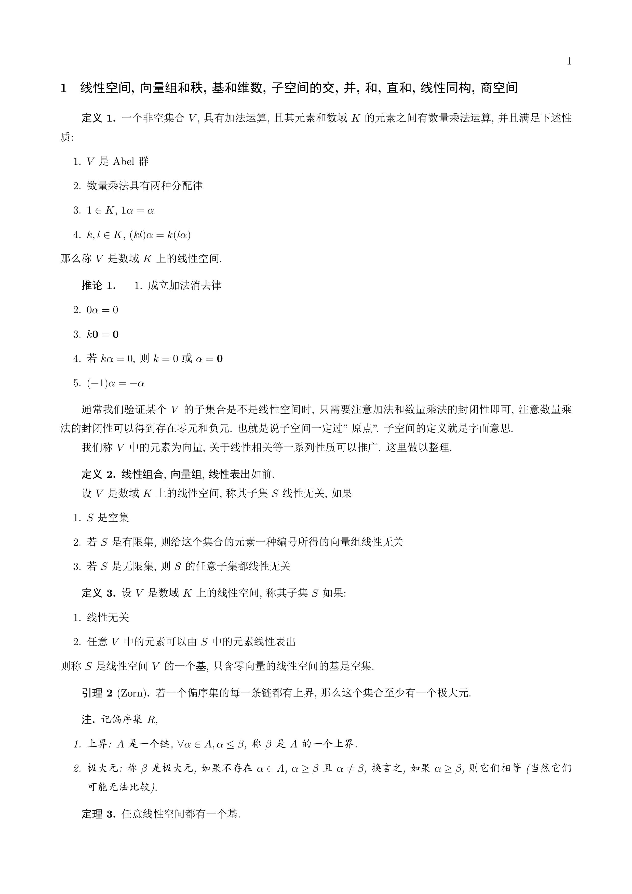

什么情况下使用Latex写数学？
虽然这种排版是很好看, 但是显然速度过于慢了, 还不如你先在别的地方写好然后再vscode上微调. 首先你有哪些使用情景?
- 数学笔记 这是用来给未来的自己行方便的功夫，可以在当日复盘中实现，但是今天来看，似乎将两者切割是更好的选择。数学笔记应该严肃吗？我目前觉得倒也不必，总之，这是一种知识架构，技术总结
技术总结向的，可以考虑录制视频供日后参考；证明上的细节，到底写不写？
数学笔记还有一种可能的用途：建立学术自信。- 数学日记，这是必要的，用于输出当日的学习成果，显然在当日的学习中你肯定会存在问题，所以这些问题也要一并记入，并且不指望你初学就能整理出凝练的观点，所以没必要像之前那样，罗列冷峻的定理和证明。这样看来日记实在不适合用 latex 写，剩下两种选择，obsidian 或者 mathpix ，mathpix 没有 latex 迅速输入的插件。但是好像也没那么必要用插件(你可以在 vscode 里编辑公式然后 cv)
最终结论是日记可以拿 logseq 写，然后数学推导细节用纸笔写然后拍照。数学笔记用 Latex 写，每周四晚和每周日晚进行总结，牢记目的是方便日后的自己而不是自我满足浪费时间！（技术项总结可以录制视频）#笔记
此外你可以录音录视频来方便未来的自己，或者找黑板推导，然后把板书拍下来。
2023 12 07 于 老馆，Logseq
开始的话
距离写下这些感想已经快一年，在这一段时间里不停的积累经验和总结中，我对记录完整，可读性高的笔记的认识也比以前更加深刻。
现在看来当初的想法有很多不合理之处。随便一例，比如 Mathpix 早就被我弃用，而 Logseq 也在暑假对 Obsidian 的折腾中失去了使用场景，以及我现在也在很多场合大多使用手写笔记本和 A4 纸。
不过，诸如日记和总结切割之类的想法还是很实际很有用的，我现在电脑编辑的主阵地基本就是 Obsidian 和 Vscode 了
总之，这里会放一些编辑好的笔记，以及偶尔的 LaTex 编辑心得。
2024 9 11，宿舍
年代久远的线性代数笔记

现在放上来的基本都是半成品，以后会完善内容和介绍和预览图...
希望以后能续上的数分笔记
小学期学分来源的jordan标准型报告
希疑似amann读书笔记惨遭放弃
意义不明的笔记废稿
意义不明的代数笔记废稿